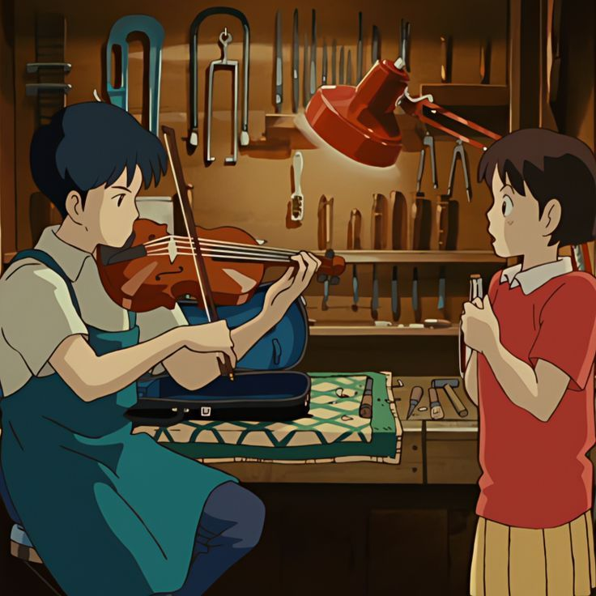
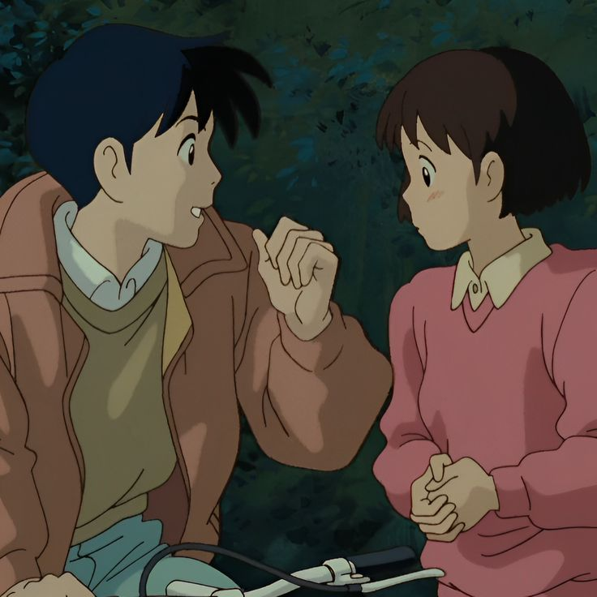

MOVIE
RECOMMENDATIONS
MIMI O SUMASEBA
Whisper of
the Heart
directed and edited by Hayao Miyazaki
animated by Studio Ghibli
In the enchanting story of "Whisper of the Heart," Shizuku, a bookish dreamer, discovers her passion for writing amidst the bustling city. An unexpected cat-shaped catalyst leads her to an antique shop, where she finds a mysterious cat figurine and encounters Seiji, a boy with a passion for violin-making. Through their burgeoning friendship, Shizuku unravels the symphony of her aspirations, realizing her love for storytelling. Their journey, woven with blossoming dreams and shared passions, unfolds against the backdrop of cherry blossoms and city whispers. As Shizuku composes the melody of her heart, this tale delicately weaves the beauty of self-discovery and the magic of chasing dreams. It celebrates the resonance found in friendship, the pursuit of passions, and the poignant harmony of finding oneself amidst life's enchanting cadence. "Whisper of the Heart" whispers a timeless message: embrace your dreams and write the symphony of your own life.
synopsis written by
open ai
Aired: May 31, 1995
Genres: Romance, Family
Duration: 1h 51m
Rating: PG-13
Amasawa
Seiji
 Shizuku
Tsukishima
© 2023 theyoakecore